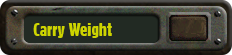

Other Attributes
From FOnline 2 Wiki
Jump to navigation
Jump to search

Navigation menu
Personal tools
Create account
Log in
Namespaces
Page
Discussion
Variants
expanded
collapsed
Views
Read
View source
View history
More
expanded
collapsed
Search
Navigation
Main page
Recent changes
Random page
Help about MediaWiki
Tools
What links here
Related changes
Special pages
Printable version
Permanent link
Page information